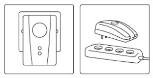
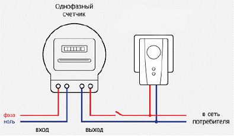

Обзор бытовых энергосберегающих устройств

Устройства энергосбережения для домов, квартир и офисов
Статические энергосберегатели - это энергосберегающие устройства, позволяющие любому потребителю электричества экономить от 15% до 45% ежемесячных расходов по оплате электроэнергии
Для рационального использования электроэнергии требуется обеспечить экономичные способы ее передачи, распределения и потребления с минимальными потерями. Для этого необходимо исключить из электрических сетей все факторы, приводящие к возникновению потерь. Одним из них является запаздывание фазы протекающего тока от напряжения при наличии индуктивной нагрузки, поскольку нагрузки в бытовых электросетях носят обычно активно-индуктивный характер. Активная энергия преобразуется в полезную - механическую, тепловую и др. энергии. Реактивная энергия не связана с выполнением полезной работы, а расходуется на создание магнитных полей и создаёт дополнительную нагрузку на силовые линии питания, т.к. она распространяется по сети, не рассеиваясь в активных элементах, а совершая колебательные движения от нагрузки к генератору и обратно. Доля потребляемой реактивной мощности в сети, в зависимости от вида полезной нагрузки, может составлять от 15% до 45 % от полного тока нагрузки. Эти 15% - 45% электроэнергии и можно сэкономить, т.к. реактивная мощность наряду с активной мощностью учитывается поставщиком электроэнергии и подлежит оплате. Потребителем по действующим тарифам.
Также, в электросетях часто возникают импульсы напряжения амплитудой от 1000 до 12000 Вольт. Эти импульсы имеют коммутационное и грозовое происхождение. Такие импульсы не измеряются и не контролируются в сети. Подобные импульсы по сети проходят к потребителям и приводят к выходу из строя дорогостоящей промышленной и бытовой техники и электроники.
Одним из основных вариантов экономии электроэнергии и повышения эффективности работы электроприборов и электроустановок является снижение потребляемой из сети реактивной мощности с одновременным повышением качества электроэнергии непосредственно в сетях потребителя.
Эти задачи успешно решают энергосберегающие устройства.
Энергосберегатель подключают в цепь «генератор-нагрузка» параллельно нагрузке после электросчётчика. При этом реактивные токи совершают локальные колебания между индуктивными элементами нагрузки и статическим преобразователем, а не циркулируют по сети переменного тока между питающим трансформатором и нагрузкой. Наличие в данном устройстве элементов для измерения и регулирования электрического тока позволяет пропустить активную электрическую мощность из сети в нагрузку, а реактивный ток перенаправлять в ту фазу нагрузки, в которой он в данный момент требуется. При этом происходит автоматическая стабилизация входного коэффициента мощности на уровне, близком к единице, а полезная мощность в нагрузке возрастает, за счет преобразования реактивной энергии в дополнительную активную.
Экономия электроэнергии на 15-45 % достигается за счет совершенствования и нормализации структуры электрического потока, динамичного поглощения или освобождения реактивной мощности, сокращение вредных гармоник и вредных электромагнитных волн, сокращения потерь на сопротивление, устранения скачков напряжения в сети.
ПРИНЦИП РАБОТЫ БЫТОВЫХ ЭНЕРГОСБЕРЕГАЮЩИХ УСТРОЙСТВ
Все модели статических энергосберегающих устройств условно состоят из пяти основных модулей, согласованная работа которых обеспечивает снижение потребления энергии:
- Модуль управления с программируемым контроллером.
Назначение: равномерно распределяет нагрузку, улавливает реактивную энергию и частично преобразует её в активную энергию.
Результат: снижает потребление энергии и обеспечивает экономию потребления электроэнергии на 15-45%. - Модуль молниезащиты/защиты от перенапряжений.
Назначение: Обеспечивает полную защиту электроприборов от разряда молнии и скачков напряжения в сети.
Результат: Исключает необходимость приобретения отдельного оборудования для защиты электроприборов и оборудования. - Модуль активной фильтрации.
Назначение: устраняет токи высших гармоник в проводах, сглаживает нелинейные искажения.
Результат: предотвращает преждевременный выход из строя электронной техники и систем, продлевает их срок службы. - Модуль корректировки коэффициента мощности.
Назначение: повышает коэффициент мощности электроприборов, перераспределяя реактивную мощность.
Результат: способствует экономии в потреблении энергии, снижает электрические потери вследствие нагрева проводки. - Модуль фазовой компенсации.
Назначение: равномерно распределяет нагрузку по каждой фазе.
Результат: способствует экономии в потреблении энергии, снижает стоимость технического обслуживания оборудования.
Важнейшим моментом в эксплуатации статических энергосберегающих устройств является то, что данное устройство, при его подключении к сети, обладает наименьшим сопротивлением в электрической системе. Следовательно, вся энергия воспринимается устройством со стороны нагрузки. Таким образом, исключается необходимость подключения отдельного статического преобразователя к каждой отдельной нагрузке в цепи. Один статический энергосберегатель может распределять энергию, поступающую от основного источника питания или от трансформатора, на все устройства, подключённые к электрической сети.
Таблица экономии
Примерная потребляемая мощность электроприборов и ориентировочный процент экономии электроэнергии при использовании статических энергосберегающих устройств.
|
БЫТОВЫЕ ЭЛЕКТРОПРИБОРЫ | ||
Наименование потребителя | Мощность, ВА | Ориентировочная экономия % |
| Кондиционер | 1000-3000 | до 20-30 |
| Газовый котел с электродвигателем | 200-900 | до 15-20 |
| Холодильники, морозильныекамеры | 150-1500 | до 20-35 |
| Лампы дневного света | 12-500 | до 35-50 |
| Стиральная машина | 300-700 | до 15-20 |
| Посудомоечная машина | 1000-2700 | до 15-20 |
| Компьютер | 400-750 | до 15-20 |
| Фен для волос | 450-2000 | до 20-25 |
| Телевизор | 100-400 | до 15-20 |
| Электроплита | 1100-6000 | до 35-40 |
| СВЧ–печь | 1500-2000 | до 35-40 |
| Утюг | 500-2000 | до 15-20 |
| Тостер | 600-1500 | до 10-15 |
| Кофеварка | 800-1500 | до 15-20 |
| Обогреватель | 1000-2400 | до 25-35 |
| Электрочайник | 1000-2000 | до 25-35 |
ЭЛЕКТРОИНСТРУМЕНТ | ||
| Дрель | 400-800 | до 12-18 |
| Перфоратор | 600-1400 | до 15-25 |
| Дисковая пила | 750-1600 | до 20-28 |
ПОДКЛЮЧЕНИЕ ЭНЕРГОСБЕРЕГАЮЩЕГО УСТРОЙСТВА

Внимательно прочитайте все инструкции перед первым использованием прибора. Убедитесь, что установленная в паспорте прибора рабочая нагрузка соответствует нагрузке в вашей сети. Общая потребляемая мощность подключенных к сети электроприборов не должна превышать максимально допустимую нагрузку для каждой конкретной модели прибора. Необходимо осторожно пользоваться прибором, запрещается подвергать его ударам, перегрузкам, воздействию жидкостей, пыли и грязи.
Для рационального использования данного оборудования его необходимо установить в первую (ближайшую) розетку от счетчика. Это позволяет определить все напряжение до счетчиков и соответственно регулировать коэффициенты мощности. При включении прибора светятся светодиоды.

Если Вы не знаете, какая розетка в схеме проводки является первой после счётчика, рекомендуется установить отдельную розетку непосредственно возле счетчика электроэнергии, подключив её к нижним клемам вводного автомата.Обратите внимание! Все устройства энергосбережения являются сертифицированными - и если Вы не можете установить его самостоятельно, Вам это сделает любой электрик.
Условия эксплуатации должны соответствовать спецификациям энергосберегающего прибора. Данное энергосберегающее оборудование можно подключать в помещениях к электрической сети с учетом количества электрических приборов и нагрузки на данную сеть. Сразу после его подключения к сети он начинает экономить электроэнергию, его можно использовать для одного или нескольких электрических приборов.
!!! Подождите две минуты после отключения прибора от сети перед тем, как прикасаться к его контактам электропитания!
Не открывайте и не ремонтируйте энергосберегатель!